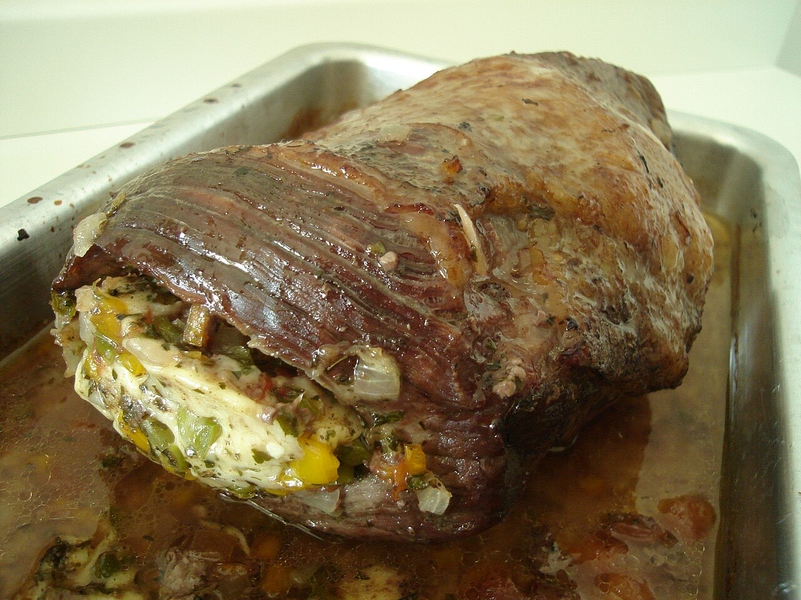
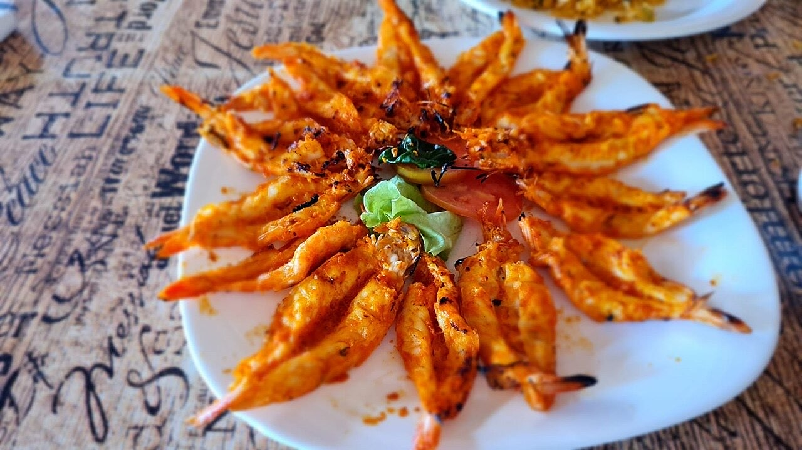
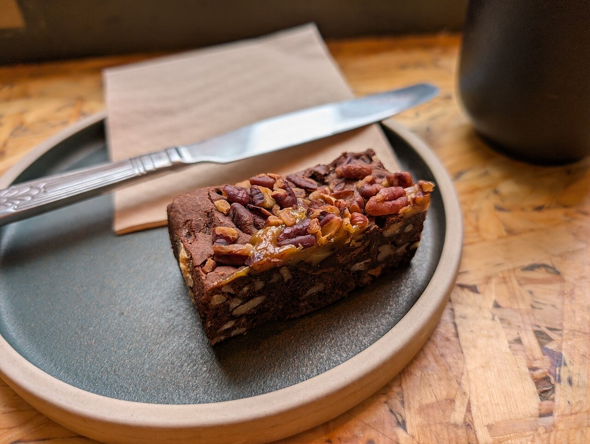

Restaurante · Centro histórico
Jantar com varanda no coração histórico
Três ambientes numa só casa, na Rua de Santa Maria.
4,6★ em 1 379 avaliações no Google.
Por QR code, sem esperar pela equipa.
O Résvés fica na Rua de Santa Maria, no centro histórico de Guimarães, com sala no piso superior, bar no rés-do-chão e varanda no 1.º andar. Reserve a sua mesa para um jantar sem pressa.



Fotografias ilustrativas — no site final usamos as vossas.
Novo · Pedidos por QR code
Menos espera nas horas de ponta, menos enganos nos pedidos e a equipa livre para servir.
Pedido de reserva
Escolha o dia e a hora — o pedido chega por WhatsApp e confirmamos logo.
↑ Assim chegaria a mensagem ao vosso WhatsApp. (Nesta demonstração nada é enviado.)
Onde estamos
| Dom–Seg | 12:30–15:00 · 19:30–22:00 |
|---|---|
| Ter–Qui | Encerrado |
| Sex | 19:30–23:00 |
| Sáb | 12:30–15:00 · 19:30–23:00 |
Proposta para Résvés Restaurante
Esta página foi feita de propósito para Résvés Restaurante por João Machado, programador web aqui de Guimarães. Inclui:
Eu trato do alojamento e da manutenção. Sem compromisso.